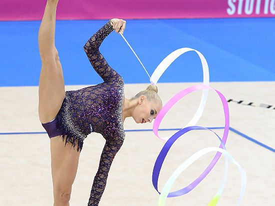

Что такое художественная гимнастика?
Художественная гимнастика — вид спорта, заключающийся в выполнении под музыку различных гимнастических и танцевальных упражнений и элементов без предмета, а также с предметом (булавы, мяч, скакалка, обруч, лента). Выступления без предмета не проводятся на соревнованиях мирового класса. В групповых выступлениях используются или один предмет (например, пять мячей, пять пар булав, пять обручей), или одновременно два вида предметов (например, обручи и булавы, ленты и мячи, скакалки и мячи). Победители определяются в многоборье и в отдельных видах.
Художественная гимнастика является олимпийским видом спорта.
Однако чтобы стать чемпионкой нужно обладать не только природными данными, но и сильным характером, который помогает преодолевать трудности по дороге к заветным медалям. Спортсмены выразительны в своих движениях, они в совершенстве могут владеть своим телом. Для выражения чувств и эмоций в показательных выступлениях могут использоваться мяч, лента, обруч, булавы, скакалка. С годами арсенал пополнился еще и шарфиками, веерами, вымпелами и флажками. Гимнастки выполняют упражнения со скакалкой, обручем, мячом, булавами и лентой на ковре размером 13x13 метров под музыкальное сопровождение, время которого не должно превышать полторы минуты. Во время упражнения гимнастка обязана двигаться в такт музыке и не выходить за пределы ковра. Все упражнения идут под музыкальное сопровождение. Существует два вида упражнений – индивидуальные (личные) и групповые.